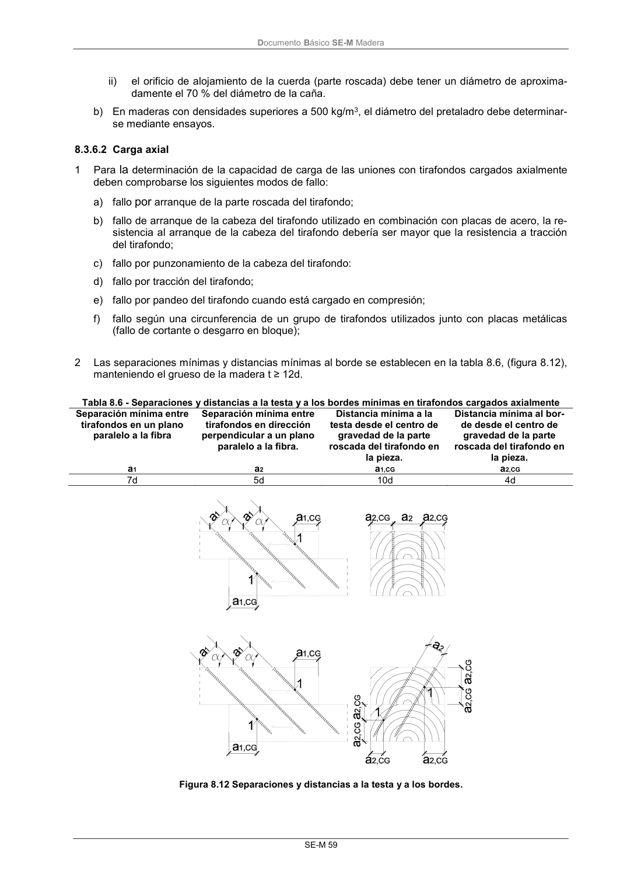

DB-SE-M Madera · edición 2019-12-20 · capa oficial
Documento DB-SE-M-oficial · SHA-256 del PDF 26b5819839ebfda78b0b119c5e76a0a37773b0d763c05688541870075df93718
Página física 65 de 132.
Copia fiel del PDF fuente · Fuente oficial
Ficha de la disposición en la fuente oficial
Formato: Texto de la página (Markdown)
Documento Básico SE-M Madera SE-M 59 ii) el orificio de alojamiento de la cuerda (parte roscada) debe tener un diámetro de aproxima- damente el 70 % del diámetro de la caña. b) En maderas con densidades superiores a 500 kg/m3, el diámetro del pretaladro debe determinar- se mediante ensayos. 8.3.6.2 Carga axial 1 Para la determinación de la capacidad de carga de las uniones con tirafondos cargados axialmente deben comprobarse los siguientes modos de fallo: a) fallo por arranque de la parte roscada del tirafondo; b) fallo de arranque de la cabeza del tirafondo utilizado en combinación con placas de acero, la re- sistencia al arranque de la cabeza del tirafondo debería ser mayor que la resistencia a tracción del tirafondo; c) fallo por punzonamiento de la cabeza del tirafondo: d) fallo por tracción del tirafondo; e) fallo por pandeo del tirafondo cuando está cargado en compresión; f) fallo según una circunferencia de un grupo de tirafondos utilizados junto con placas metálicas (fallo de cortante o desgarro en bloque); 2 Las separaciones mínimas y distancias mínimas al borde se establecen en la tabla 8.6, (figura 8.12), manteniendo el grueso de la madera t ≥ 12d. Tabla 8.6 - Separaciones y distancias a la testa y a los bordes mínimas en tirafondos cargados axialmente Separación mínima entre tirafondos en un plano paralelo a la fibra Separación mínima entre tirafondos en dirección perpendicular a un plano paralelo a la fibra. Distancia mínima a la testa desde el centro de gravedad de la parte roscada del tirafondo en la pieza. Distancia mínima al bor- de desde el centro de gravedad de la parte roscada del tirafondo en la pieza. a1 a2 a1,CG a2,CG 7d 5d 10d 4d Figura 8.12 Separaciones y distancias a la testa y a los bordes.
